§ 3.14 Zusätzliche Bezeichnung der Fahrzeuge in Fahrt bei Beförderung bestimmter gefährlicher Güter(Anlage 3: Bild 27a, 27b, 28a, 28b, 29, 30, 31, 32)
Binnenschifffahrtsstraßen-Ordnung
1. Ein Fahrzeug in Fahrt, das bestimmte entzündbare Stoffe nach Kapitel 3.2 Tabelle A des ADN befördert, muss zusätzlich zu der anderen nach dieser Verordnung vorgeschriebenen Bezeichnung folgende Bezeichnung nach den Unterabschnitten 7.1.5.0 oder 7.2.5.0 des ADN führen:
a) bei Nacht:
ein blaues Licht; | 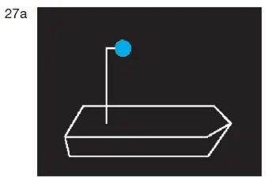 |
b) bei Tag:
einen blauen Kegel mit der Spitze nach unten. | 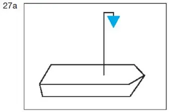 |
Das Zeichen muss an einer geeigneten Stelle und so hoch geführt werden, dass es von allen Seiten sichtbar ist. Anstelle des blauen Kegels nach Satz 1 Buchstabe b kann auch je ein blauer Kegel auf dem Vorschiff und dem Achterschiff und so hoch geführt werden, dass der Kegel auf a) dem Vorschiff mindestens in einem Bereich von Backbord querab über Voraus bis Steuerbord querab, b) auf dem Achterschiff mindestens in einem Bereich von Backbord querab über Achteraus bis Steuerbord querab | 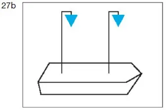 |
sichtbar ist. |
2. Ein Fahrzeug in Fahrt, das bestimmte gesundheitsschädliche Stoffe nach Kapitel 3.2 Tabelle A des ADN befördert, muss zusätzlich zu der anderen nach dieser Verordnung vorgeschriebenen Bezeichnung folgende Bezeichnung nach Unterabschnitt 7.1.5.0 oder 7.2.5.0 des ADN führen:
a) bei Nacht:
zwei blaue Lichter; | 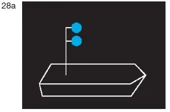 |
b) bei Tag:
zwei blaue Kegel mit der Spitze nach unten. | 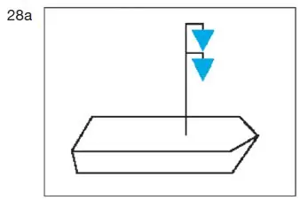 |
Die Zeichen müssen übereinander in einem Abstand von 1,00 m an einer geeigneten Stelle und so hoch geführt werden, dass sie von allen Seiten sichtbar sind. Abweichend von Satz 2 kann der Abstand zwischen den Zeichen in Abhängigkeit von den Gegebenheiten geringer gewählt werden, wenn hierdurch ihre Erkennbarkeit nicht eingeschränkt wird. Anstelle der zwei blauen Kegel nach Satz 1 Buchstabe b in Verbindung mit den Sätzen 2 und 3 können auch je zwei blaue Kegel auf dem Vorschiff und dem Achterschiff und so hoch geführt werden, dass die Kegel auf a) dem Vorschiff mindestens in einem Bereich von Backbord querab über Voraus bis Steuerbord querab, b) auf dem Achterschiff mindestens in einem Bereich von Backbord querab über Achteraus bis Steuerbord querab | 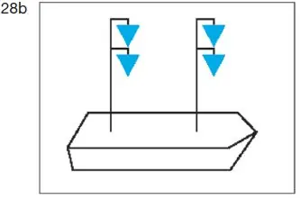 |
sichtbar sind. |
3. Ein Fahrzeug in Fahrt, das bestimmte explosive Stoffe nach Kapitel 3.2 Tabelle A des ADN befördert, muss zusätzlich zu der anderen nach dieser Verordnung vorgeschriebenen Bezeichnung folgende Bezeichnung nach Unterabschnitt 7.1.5.0 oder 7.2.5.0 des ADN führen:
a) bei Nacht:
drei blaue Lichter; | 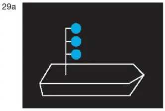 |
b) bei Tag:
drei blaue Kegel mit der Spitze nach unten. | 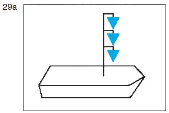 |
Die Zeichen müssen übereinander in einem Abstand von 1,00 m an einer geeigneten Stelle und so hoch geführt werden, dass sie von allen Seiten sichtbar sind. Abweichend von Satz 2 kann der Abstand zwischen den Zeichen in Abhängigkeit von den Gegebenheiten geringer gewählt werden, wenn hierdurch ihre Erkennbarkeit nicht eingeschränkt wird. Anstelle der drei blauen Kegel nach Satz 1 Buch- stabe b in Verbindung mit den Sätzen 2 und 3 können auch je drei blaue Kegel auf dem Vorschiff und dem Achterschiff und so hoch geführt werden, dass die Kegel auf a) dem Vorschiff mindestens in einem Bereich von Backbord querab über Voraus bis Steuerbord querab, b) auf dem Achterschiff mindestens in einem Bereich von Backbord querab über Achteraus bis Steuerbord querab | 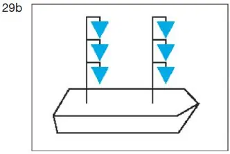 |
sichtbar sind. |
4. Fährt oder fahren in einem Schubverband oder in einer Zusammenstellung gekuppelter Fahrzeuge ein Fahrzeug oder mehrere Fahrzeuge im Sinne der Nummer 1, 2 oder 3, muss die Bezeichnung nach der Nummer 1, 2 oder 3 auf dem Fahrzeug geführt werden, das den Verband oder die Zusammenstellung fortbewegt.
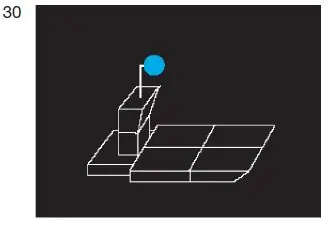 | 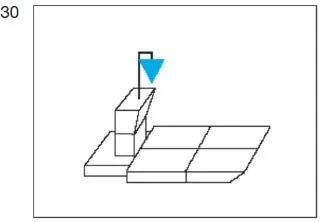 | |
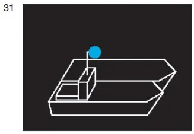 | 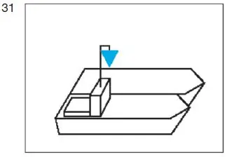 |
5. Ein Schubverband, der durch zwei schiebende Fahrzeuge nebeneinander fortbewegt wird, muss die Bezeichnung nach Nummer 4 auf dem steuerbordseitigen, schiebenden Fahrzeug führen.
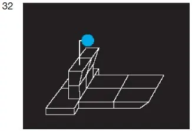 | 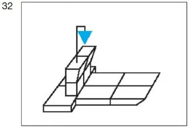 |
6. Ein Fahrzeug, ein Schubverband oder gekuppelte Fahrzeuge, das, der oder die verschiedene gefährliche Güter nach den Nummern 1, 2 oder 3 zusammen befördern, führen die Bezeichnung für das gefährliche Gut, das die größte Anzahl der blauen Lichter oder blauen Kegel erfordert.
7. Ein Fahrzeug, das keine Bezeichnung nach Nummer 1, 2 oder 3 führen muss, jedoch nach Abschnitt 1.16.1 des ADN ein Zulassungszeugnis besitzt und die Sicherheitsbestimmungen einhält, die für ein Fahrzeug nach Nummer 1 gelten, hat bei der Annäherung an Schleusen die Bezeichnung nach Nummer 1 zu führen, wenn es zusammen mit einem Fahrzeug geschleust werden will, das die Bezeichnung nach Nummer 1 führen muss.
8. Die Lichtstärke der in den Nummern 1 bis 7 vorgeschriebenen blauen Lichter muss mindestens derjenigen der gewöhnlichen blauen Lichter entsprechen.